જો આ પ્રશ્નમાં ભૂલ થઈ હોય, તો ફરી જુઓ: સંદર્ભ fs-id1233452.
જો આ પ્રશ્નમાં ભૂલ થઈ હોય, તો ફરી જુઓ: સંદર્ભ fs-id1275385
જો આ પ્રશ્નમાં ભૂલ થઈ હોય, તો ફરી જુઓ: સંદર્ભ fs-id2830372.
ભાગાકારની લખાવટનો ઉપયોગ કરો
ચાર કૂકીની ત્રણ હરોળમાં કુલ બાર કૂકી દર્શાવેલી છે.
કૂકીની 3 થેલી છે; દરેક થેલીમાં 4 કૂકી છે.
ભાગાકારની ક્રિયાનાં પ્રતીકો
| ક્રિયા | લખાવટ | પદાવલી | આ રીતે વાંચો | પરિણામ |
|---|---|---|---|---|
|
|
ઉકેલ
- ⓐ આને આપણે ચોસઠ ભાગ્યા આઠ વાંચીએ છીએ અને પરિણામ છે ચોસઠ અને આઠનું ભાગફળ.
- ⓑ આને આપણે બેતાલીસ ભાગ્યા સાત વાંચીએ છીએ અને પરિણામ છે બેતાલીસ અને સાતનું ભાગફળ.
- ⓒ આને આપણે અઠ્ઠાવીસ ભાગ્યા ચાર વાંચીએ છીએ અને પરિણામ છે અઠ્ઠાવીસ અને ચારનું ભાગફળ.
- ⓐ ચોર્યાસી ભાગ્યા સાત; ચોર્યાસી અને સાતનું ભાગફળ
- ⓑ અઢાર ભાગ્યા છ; અઢાર અને છનું ભાગફળ.
- ⓒ ચોવીસ ભાગ્યા આઠ; ચોવીસ અને આઠનું ભાગફળ
- ⓐ બોતેર ભાગ્યા નવ; બોતેર અને નવનું ભાગફળ
- ⓑ એકવીસ ભાગ્યા ત્રણ; એકવીસ અને ત્રણનું ભાગફળ
- ⓒ ચોપન ભાગ્યા છ; ચોપન અને છનું ભાગફળ
પૂર્ણ સંખ્યાઓનો ભાગાકાર નમૂના દ્વારા દર્શાવો
ઉકેલ
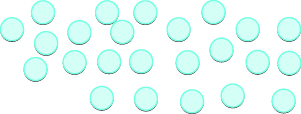
છૂટી મૂકેલી 24 ચકતીઓ.
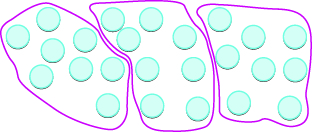
24 ચકતીઓ 3 બંધ આકારમાં છે; દરેક આકારમાં 8 ચકતીઓ છે.
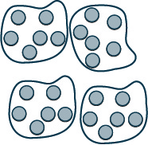
24 ચકતીઓનાં ચાર જૂથ છે; દરેક જૂથમાં છ ચકતીઓ છે. આથી 24 ÷ 6 = 4.
છ અનિયમિત આકાર છૂટા ગોઠવેલા છે; દરેકમાં કેટલાંક નાનાં રાખોડી વર્તુળ છે.
પૂર્ણ સંખ્યાઓનો ભાગાકાર કરો
ઉકેલ
-
ⓐ 42નો 6 વડે ભાગાકાર કરો. ગુણાકાર કરીને તપાસો.
-
ⓑ 72નો 9 વડે ભાગાકાર કરો. ગુણાકાર કરીને તપાસો. -
ⓒ 63નો 7 વડે ભાગાકાર કરો. ગુણાકાર કરીને તપાસો.
એકને લગતા ભાગાકારના ગુણધર્મો
| કોઈ પણ સંખ્યા (0 સિવાય)નો તે જ સંખ્યા વડે ભાગાકાર કરતાં એક મળે છે. | |
| કોઈ પણ સંખ્યાનો એક વડે ભાગાકાર કરતાં એ જ સંખ્યા મળે છે. |
- ⓐ
- ⓑ
- ⓒ
ઉકેલ
-
ⓐ કોઈ સંખ્યાનો તે જ સંખ્યા વડે ભાગાકાર કરતાં 1 મળે છે. ગુણાકાર કરીને તપાસો. -
ⓑ કોઈ સંખ્યાનો 1 વડે ભાગાકાર કરતાં એ જ સંખ્યા મળે છે. ગુણાકાર કરીને તપાસો. -
ⓒ કોઈ સંખ્યાનો 1 વડે ભાગાકાર કરતાં એ જ સંખ્યા મળે છે. ગુણાકાર કરીને તપાસો.
- ⓐ 1
- ⓑ 27
- ⓐ 16
- ⓑ 4
શૂન્યને લગતા ભાગાકારના ગુણધર્મો
| શૂન્યનો કોઈ પણ સંખ્યા વડે ભાગાકાર કરતાં 0 મળે છે. | |
| કોઈ સંખ્યાનો શૂન્ય વડે ભાગાકાર વ્યાખ્યાયિત નથી. | વ્યાખ્યાયિત નથી |
ઉકેલ
-
ⓐ શૂન્યનો કોઈ પણ સંખ્યા વડે ભાગાકાર કરતાં શૂન્ય મળે છે. ગુણાકાર કરીને તપાસો. -
ⓑ શૂન્ય વડે ભાગાકાર વ્યાખ્યાયિત નથી. વ્યાખ્યાયિત નથી
| ભાજ્યના પહેલા અંક 7નો ભાજક 3 વડે ભાગાકાર કરો. | |
| ભાજક 3ને 7માંથી બે વાર બાદ કરી શકાય, કારણ કે . ભાગફળમાં 2ને 7ની ઉપર લખો. | 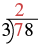 78નો 3 વડે લાંબો ભાગાકાર. શરૂઆતમાં 7નો 3 વડે ભાગાકાર કરતાં ભાગફળનો પહેલો અંક 2 મળે છે. |
| ભાગફળના 2નો 3 વડે ગુણાકાર કરો અને ગુણનફળ 6ને 7ની નીચે લખો. | 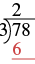 78નો 3 વડે લાંબો ભાગાકાર. ભાગફળનો 2, અંક 7ની ઉપર છે. ગુણનફળ 6, અંક 7ની નીચે લાલ રંગે લખેલું છે; બાદબાકીનો શેષ આ પગલામાં હજી લખ્યો નથી. |
| તે ગુણનફળ ભાજ્યના પહેલા અંકમાંથી બાદ કરો. બાદબાકી કરો: . તફાવત 1ને ભાજ્યના પહેલા અંકની નીચે લખો. | 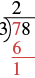 78નો 3 વડે લાંબો ભાગાકાર કરવાનું પહેલું પગલું. અંક 7નો 3 વડે ભાગાકાર કરતાં ભાગફળ 2 અને શેષ 1 મળે છે, જ્યારે 6 બાદ કરવામાં આવે છે. |
| ભાજ્યનો આગળનો અંક નીચે ઉતારો. 8ને નીચે ઉતારો. | 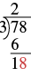 78નો 3 વડે લાંબો ભાગાકાર કરવાનું આગળનું પગલું. અંક 6ને 7માંથી બાદ કરતાં 1 મળે છે. અંક 8 નીચે ઉતારતાં 18 બને છે. |
| 18નો ભાજક 3 વડે ભાગાકાર કરો. ભાજક 3ને 18માંથી છ વાર બાદ કરી શકાય. | 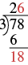 78નો 3 વડે લાંબો ભાગાકાર કરવાનું આગળનું પગલું. આ પગલામાં 18નો 3 વડે ભાગાકાર કરીએ છીએ. મળેલો અંક 6 ભાગાકારની ઉપર લખવાથી આખો જવાબ 26 મળે છે. |
| ભાગફળમાં 6ને 8ની ઉપર લખો. | |
| ભાગફળના 6નો ભાજક વડે ગુણાકાર કરો અને ગુણનફળ 18ને ભાજ્યની નીચે લખો. 18માંથી 18 બાદ કરો. | 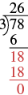 78નો 3 વડે લાંબો ભાગાકાર કરવાનું છેલ્લું પગલું. 18નો 3 વડે નિઃશેષ ભાગાકાર થાય છે; શેષ શૂન્ય અને આખો જવાબ 26 મળે છે. |
પૂર્ણ સંખ્યાઓનો ભાગાકાર કરો.
- ભાજ્યના પહેલા અંકનો ભાજક વડે ભાગાકાર કરો.
જો ભાજક ભાજ્યના પહેલા અંક કરતાં મોટો હોય, તો ભાજ્યના પહેલા બે અંકથી બનતી સંખ્યાનો ભાજક વડે ભાગાકાર કરો; જરૂર પડે તો એ જ રીતે આગળ વધો. - ભાગફળ ભાજ્યની ઉપર લખો.
- ભાગફળનો ભાજક વડે ગુણાકાર કરો અને ગુણનફળ ભાજ્યની નીચે લખો.
- તે ગુણનફળ ભાજ્યમાંથી બાદ કરો.
- ભાજ્યનો આગળનો અંક નીચે ઉતારો.
- ભાજ્યમાં નીચે ઉતારવા માટે કોઈ અંક બાકી ન રહે ત્યાં સુધી પગલું 1થી ફરી કરો.
- ભાગફળનો ભાજક વડે ગુણાકાર કરીને તપાસો.
ઉકેલ
| લાંબો ભાગાકાર કરવા માટે પ્રશ્ન ફરી ગોઠવીને લખીએ. | 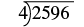 2596નો 4 વડે લાંબો ભાગાકાર કરવા માટે ગોઠવેલો પ્રશ્ન. |
| ભાજ્યના પહેલા અંક 2નો ભાજક 4 વડે ભાગાકાર કરો. | 2596નો 4 વડે લાંબો ભાગાકાર કરવા માટે ગોઠવેલો પ્રશ્ન. પહેલો અંક 2 લાલ રંગનો છે. |
| 4ને 2માંથી એક વાર પણ બાદ ન કરી શકાય, તેથી ભાજ્યના પહેલા બે અંકથી બનેલી સંખ્યા 25નો 4 વડે ભાગાકાર કરીએ. ભાજક 4ને 25માંથી છ વાર બાદ કરી શકાય. | |
| ભાગફળમાં 6ને 5ની ઉપર લખીએ. | 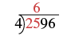 2596નો 4 વડે લાંબો ભાગાકાર. ભાગફળનો પહેલો અંક 6, અંક 5ની ઉપર છે; તે 25 ભાગ્યા 4 બરાબર 6 દર્શાવે છે. |
| ભાગફળના 6નો ભાજક 4 વડે ગુણાકાર કરો અને ગુણનફળ 24ને ભાજ્યના પહેલા બે અંકની નીચે લખો. | 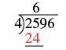 2596નો 4 વડે લાંબો ભાગાકાર. પહેલા પગલામાં 4ને 25માંથી છ વાર બાદ કરી શકાય છે; લાલ રંગે 24ને 25ની નીચે લખેલું છે, જે 4 અને 6નું ગુણનફળ દર્શાવે છે. |
| તે ગુણનફળ ભાજ્યના પહેલા બે અંકથી બનેલી સંખ્યામાંથી બાદ કરો. બાદબાકી કરો: . તફાવત 1ને ભાજ્યના બીજા અંકની નીચે લખો. | 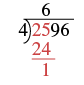 2596નો 4 વડે લાંબો ભાગાકાર. પહેલા પગલામાં 4ને 25માંથી છ વાર બાદ કરી શકાય છે; લાલ રંગે 24ને 25ની નીચે લખેલું છે, જે 4 અને 6નું ગુણનફળ દર્શાવે છે. 24ને 25માંથી બાદ કરતાં શેષ 1 રહે છે. |
| હવે 9ને નીચે ઉતારો અને આ પગલાં ફરી કરો. ચારના 4 જૂથ 19માં સમાય છે. 4ને 9ની ઉપર લખો. 4નો 4 વડે ગુણાકાર કરો અને આ ગુણનફળ 19માંથી બાદ કરો. | 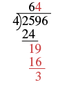 2596નો 4 વડે લાંબો ભાગાકાર. ભાજ્યનો ત્રીજો અંક 9, શેષ 1ની પાસે નીચે ઉતારતાં 19 બને છે. ભાગફળનો આગળનો અંક 4 છે. 19માંથી 16 બાદ કરતાં શેષ 3 રહે છે. |
| 6ને નીચે ઉતારો અને આ પગલાં ફરી કરો. ચારના 9 જૂથ 36માં સમાય છે. 9ને 6ની ઉપર લખો. 9નો 4 વડે ગુણાકાર કરો અને આ ગુણનફળ 36માંથી બાદ કરો. | 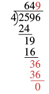 2596નો 4 વડે લાંબો ભાગાકાર, જેમાં શેષ વિના 649 મળે છે અને ભાગાકારનાં પગલાં દર્શાવેલાં છે. |
| તેથી . | |
| ગુણાકાર કરીને તપાસો. 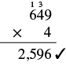 649નો 4 વડે ગુણાકાર કરતાં 2596 મળે છે. |
ઉકેલ
| લાંબો ભાગાકાર કરવા માટે પ્રશ્ન ફરી ગોઠવીને લખીએ. | 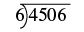 4506નો 6 વડે લાંબો ભાગાકાર. |
| પહેલા 6 વડે 4નો ભાગાકાર કરવાનો પ્રયત્ન કરીએ. | 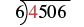 4506નો 6 વડે લાંબો ભાગાકાર. પહેલો અંક 4 લાલ રંગનો છે. |
| એ થઈ શકતું નથી, તેથી 6 વડે 45નો ભાગાકાર કરીએ. છના 7 જૂથ 45માં સમાય છે. 7ને 5ની ઉપર લખીએ. |
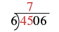 4506નો 6 વડે લાંબો ભાગાકાર. ભાગફળનો પહેલો અંક 7, અંક 5ની ઉપર છે; તે 45 ભાગ્યા 6 કરતાં 7 મળે છે અને શેષ રહે છે એમ દર્શાવે છે. |
| 7નો 6 વડે ગુણાકાર કરો અને આ ગુણનફળ 45માંથી બાદ કરો. | 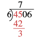 લાંબા ભાગાકારનું શરૂઆતનું પગલું: 45નો 6 વડે ભાગાકાર કરતાં 7 મળે છે; 42 બાદ કરતાં શેષ 3 રહે છે. |
| હવે 0ને નીચે ઉતારો અને આ પગલાં ફરી કરો. છના 5 જૂથ 30માં સમાય છે. 5ને 0ની ઉપર લખો. 5નો 6 વડે ગુણાકાર કરો અને આ ગુણનફળ 30માંથી બાદ કરો. |
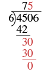 લાંબા ભાગાકારના આ પગલામાં અંક 0ને શેષ 3 પાસે નીચે ઉતારવાથી 30 બને છે; તેનો 6 વડે ભાગાકાર કરી શકાય. 30માંથી 6 પૂરા પાંચ વાર બાદ થઈ શકે. તેથી ભાગાકારની ઉપર 5 લખીએ છીએ અને શેષ 0 રહે છે. |
| હવે 6ને નીચે ઉતારો અને આ પગલાં ફરી કરો. છનું 1 જૂથ 6માં સમાય છે. 1ને 6ની ઉપર લખો. 1નો 6 વડે ગુણાકાર કરો અને આ ગુણનફળ 6માંથી બાદ કરો. |
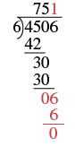 લાંબા ભાગાકારનું છેલ્લું પગલું: અંક 6ને શેષ 0 પાસે નીચે ઉતારવાથી 6 બને છે; તેમાંથી 6 એક વાર બાદ થઈ શકે. તેથી ભાગાકારની ઉપર 1 લખીએ છીએ; છેલ્લો શેષ 0 અને જવાબ 751 મળે છે. |
| ગુણાકાર કરીને તપાસો. 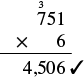 751નો 6 વડે ઊભો ગુણાકાર. સાચા જવાબ 4,506ની પાસે ખરાની નિશાની છે. |
ઉકેલ
| લાંબો ભાગાકાર કરવા માટે પ્રશ્ન ફરી ગોઠવીને લખીએ. | 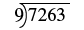 7263નો 9 વડે લાંબો ભાગાકાર. |
| પહેલા 9 વડે 7નો ભાગાકાર કરવાનો પ્રયત્ન કરીએ. | 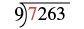 7263નો 9 વડે લાંબો ભાગાકાર. પહેલો અંક 7 લાલ રંગનો છે. |
| એ થઈ શકતું નથી, તેથી 9 વડે 72નો ભાગાકાર કરીએ. નવના 8 જૂથ 72માં સમાય છે. 8ને 2ની ઉપર લખીએ. |
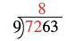 7263નો 9 વડે લાંબો ભાગાકાર. પહેલા પગલામાં શરૂઆતના બે અંકથી બનેલી સંખ્યા 72નો 9 વડે ભાગાકાર કરતાં 8 મળે છે, જે ભાગાકારની રેખા ઉપર લખેલો છે. |
| 8નો 9 વડે ગુણાકાર કરો અને આ ગુણનફળ 72માંથી બાદ કરો. | 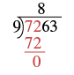 7263નો 9 વડે લાંબો ભાગાકાર. આગળના પગલામાં 9નો 8 વડે ગુણાકાર કરતાં મળતા 72ને શરૂઆતના 72ની નીચે લખીએ છીએ; શેષ 0 રહે છે. |
| હવે 6ને નીચે ઉતારો અને આ પગલાં ફરી કરો. નવના 0 જૂથ 6માં સમાય છે. 0ને 6ની ઉપર લખો. 0નો 9 વડે ગુણાકાર કરો અને આ ગુણનફળ 6માંથી બાદ કરો. |
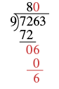 7263નો 9 વડે લાંબો ભાગાકાર. આગળના પગલામાં અંક 6 નીચે ઉતારેલો છે. છનો 9 વડે નિઃશેષ ભાગાકાર થતો નથી, તેથી ભાગાકારની ઉપર 0 લખીએ છીએ. નવ ગુણ્યા 0 બરાબર 0 નીચે લખીએ છીએ; શેષ 6 રહે છે. |
| હવે 3ને નીચે ઉતારો અને આ પગલાં ફરી કરો. નવના 7 જૂથ 63માં સમાય છે. 7ને 3ની ઉપર લખો. 7નો 9 વડે ગુણાકાર કરો અને આ ગુણનફળ 63માંથી બાદ કરો. |
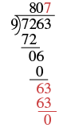 7263નો 9 વડે લાંબો ભાગાકાર. આગળના પગલામાં છેલ્લો અંક 3ને 6ની પાસે નીચે ઉતારવાથી 63 બને છે. 63માંથી 9ને 7 વાર બાદ કરી શકાય. તેથી ભાગાકારની રેખા ઉપર 7 લખીએ છીએ; શેષ શૂન્ય અને જવાબ 807 મળે છે. |
| ગુણાકાર કરીને તપાસો. 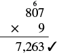 807નો 9 વડે ગુણાકાર કરતાં 7,263 મળે છે. જવાબની પાસે ખરાની નિશાની છે. |
છૂટી મૂકેલી 28 કૂકીનું ચિત્ર.
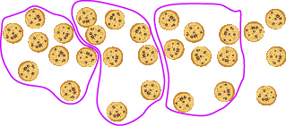
28 કૂકીમાંથી આઠ આઠ કૂકીનાં ત્રણ જૂથ બનાવ્યાં છે અને ચાર કૂકી બહાર બાકી છે. ભાગફળ 3 અને શેષ 4 છે.
ઉકેલ
| લાંબો ભાગાકાર કરવા માટે પ્રશ્ન ફરી ગોઠવીને લખીએ. | 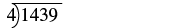 1439નો 4 વડે લાંબો ભાગાકાર દર્શાવતી ગણિતની પદાવલી. |
| પહેલા 4 વડે 1નો ભાગાકાર કરવાનો પ્રયત્ન કરીએ. એ થઈ શકતું નથી, તેથી 4 વડે 14નો ભાગાકાર કરીએ. ચારના 3 જૂથ 14માં સમાય છે. 3ને 4ની ઉપર લખીએ. |
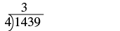 1439નો 4 વડે લાંબો ભાગાકાર. ભાગફળનો પહેલો અંક 3, ‘14’ની ઉપર લખેલો છે; આ અંકો ભાજ્ય 1439ના છે. |
| 3નો 4 વડે ગુણાકાર કરો અને આ ગુણનફળ 14માંથી બાદ કરો. | 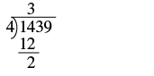 1439નો 4 વડે લાંબો ભાગાકાર. આ પગલામાં 4 ગુણ્યા 3 બરાબર 12ને પહેલા બે અંકથી બનતી સંખ્યા 14ની નીચે લખીએ છીએ. 14 ઓછા 12 કરતાં શેષ 2 રહે છે. |
| હવે 3ને નીચે ઉતારો અને આ પગલાં ફરી કરો. ચારના 5 જૂથ 23માં સમાય છે. 5ને 3ની ઉપર લખો. 5નો 4 વડે ગુણાકાર કરો અને આ ગુણનફળ 23માંથી બાદ કરો. |
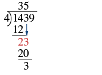 1439નો 4 વડે લાંબો ભાગાકાર. આ પગલામાં અંક 3ને શેષ 2ની પાસે નીચે ઉતારવાથી 23 બને છે. 23માંથી 4ને 5 વાર બાદ કરી શકાય. ઉપર 5 અને નીચે 20 લખીએ; તે 23ની નીચે હોય છે અને શેષ 3 રહે છે. |
| હવે 9ને નીચે ઉતારો અને આ પગલાં ફરી કરો. ચારના 9 જૂથ 39માં સમાય છે. 9ની ઉપર 9 લખો. 9નો 4 વડે ગુણાકાર કરો અને આ ગુણનફળ 39માંથી બાદ કરો. નીચે ઉતારવા માટે કોઈ અંક બાકી નથી, તેથી ભાગાકાર પૂરો થયો. શેષ 3 છે. |
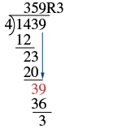 1439નો 4 વડે લાંબો ભાગાકાર. આ પગલામાં છેલ્લો અંક 9ને અગાઉના શેષ 3ની પાસે નીચે ઉતારવાથી 39 બને છે. 4ને 39માંથી નવ વાર જ બાદ કરી શકાય; આથી 36 મળે છે અને છેલ્લો શેષ 3 રહે છે. ઉપર લખેલો જવાબ 359R3 છે. |
ગુણાકાર કરીને તપાસો.
તપાસ સાચી છે: ભાગફળ × ભાજક + શેષ = ભાજ્ય. 359 ગુણ્યા 4 કરતાં 1,436 મળે છે. તેમાં 3 ઉમેરતાં છેલ્લો જવાબ 1,439 મળે છે. |
ઉકેલ
| લાંબો ભાગાકાર કરવા માટે પ્રશ્ન ફરી ગોઠવીને લખીએ. | |
| પહેલા 13 વડે 1નો ભાગાકાર કરવાનો પ્રયત્ન કરીએ. એ થઈ શકતું નથી, તેથી 13 વડે 14નો ભાગાકાર કરીએ. તેરનું 1 જૂથ 14માં સમાય છે. 1ને 4ની ઉપર લખીએ. |
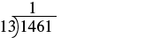 1461નો 13 વડે લાંબો ભાગાકાર. ભાગાકારની રેખા ઉપર 1 લખેલો છે. |
| 1નો 13 વડે ગુણાકાર કરો અને આ ગુણનફળ 14માંથી બાદ કરો. | 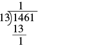 1461નો 13 વડે લાંબો ભાગાકાર. પહેલા પગલામાં 13ને 14માંથી બાદ કરતાં શેષ 1 રહે છે. ઉપર ભાગફળ 1 છે. |
| હવે 6ને નીચે ઉતારો અને આ પગલાં ફરી કરો. તેરનું 1 જૂથ 16માં સમાય છે. 1ને 6ની ઉપર લખો. 1નો 13 વડે ગુણાકાર કરો અને આ ગુણનફળ 16માંથી બાદ કરો. |
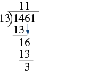 1461નો 13 વડે લાંબો ભાગાકાર ચાલી રહ્યો છે. અત્યારનાં પગલાંમાં ભાગફળનો ભાગ 11 અને શેષ 3 મળે છે; આખી ગણતરી હજી પૂરી થઈ નથી. |
| હવે 1ને નીચે ઉતારો અને આ પગલાં ફરી કરો. તેરના 2 જૂથ 31માં સમાય છે. 2ને 1ની ઉપર લખો. 2નો 13 વડે ગુણાકાર કરો અને આ ગુણનફળ 31માંથી બાદ કરો. નીચે ઉતારવા માટે કોઈ અંક બાકી નથી, તેથી ભાગાકાર પૂરો થયો. શેષ 5 છે. નું ભાગફળ 112 અને શેષ 5 છે. |
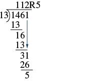 1461નો 13 વડે લાંબો ભાગાકાર ચાલી રહ્યો છે. આ છેલ્લા પગલામાં જવાબ 112 અને શેષ 5 મળે છે. |
ગુણાકાર કરીને તપાસો.
તપાસ સાચી છે: ભાગફળ × ભાજક + શેષ = ભાજ્ય. ભાગાકારનો જવાબ તપાસતી હાથથી લખેલી ગણતરી: ભાગફળ (112)નો ભાજક (13) વડે ગુણાકાર કરીને શેષ (5) ઉમેરતાં મૂળ સંખ્યા (1461) મળે છે. |
ઉકેલ
| લાંબો ભાગાકાર કરવા માટે પ્રશ્ન ફરી ગોઠવીને લખીએ. | |
| પહેલા 241 વડે 7નો ભાગાકાર કરવાનો પ્રયત્ન કરીએ. એ થઈ શકતું નથી, તેથી 241 વડે 74નો ભાગાકાર કરીએ. એ પણ થઈ શકતું નથી, તેથી 241 વડે 745નો ભાગાકાર કરીએ. 2ને 7માંથી ત્રણ વાર બાદ કરી શકાય, તેથી 3 અજમાવીએ. કારણ કે , તેથી 3ને 5ની ઉપર લખીએ; આ અંક 745માં છે. નોંધો કે 4 બહુ મોટું થશે, કારણ કે , જે 745 કરતાં મોટું છે. |
|
| 3નો 241 વડે ગુણાકાર કરો અને આ ગુણનફળ 745માંથી બાદ કરો. | 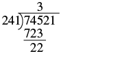 74521નો 241 વડે લાંબો ભાગાકાર. ભાગફળમાં 3ને ભાજ્યના 5ની ઉપર લખેલું છે. 745માંથી 723 બાદ કરતાં 22 રહે છે. |
| હવે 2ને નીચે ઉતારો અને આ પગલાં ફરી કરો. 241ને 222માંથી એક વાર પણ બાદ કરી શકાતું નથી. સ્થાન જાળવવા 0ને 2ની ઉપર લખીએ અને આગળ વધીએ. |
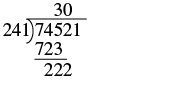 74521નો 241 વડે લાંબો ભાગાકાર. આ પગલામાં ચોથો અંક 2ને અગાઉના શેષ 22ની પાસે લખવાથી 222 બને છે; તેનો 241 વડે નિઃશેષ ભાગાકાર થતો નથી. તેથી ભાગાકારની રેખા ઉપર શૂન્ય લખેલું છે. |
| હવે 1ને નીચે ઉતારો અને આ પગલાં ફરી કરો. 9 અજમાવો. કારણ કે , તેથી 9ને 1ની ઉપર લખીએ. 9નો 241 વડે ગુણાકાર કરો અને આ ગુણનફળ 2,221માંથી બાદ કરો. |
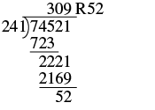 હાથથી લખેલો 74521નો 241 વડે લાંબો ભાગાકાર; ભાગફળ 309 અને શેષ 52 મળે છે. |
| નીચે ઉતારવા માટે કોઈ અંક બાકી નથી, તેથી ભાગાકાર પૂરો થયો. શેષ 52 છે. તેથી નું ભાગફળ 309 અને શેષ 52 છે. |
|
ગુણાકાર કરીને તપાસો.
તપાસ સાચી છે: ભાગફળ × ભાજક + શેષ = ભાજ્ય. 309નો 241 વડે ગુણાકાર. શેષ 52 ઉમેરતાં છેલ્લો જવાબ 74,521 મળે છે. |
શબ્દોમાં આપેલી વાતને ગણિતની લખાવટમાં ફેરવો
| ક્રિયા | શબ્દસમૂહ | ઉદાહરણ | પદાવલી |
|---|---|---|---|
| ભાગાકાર | ભાગ્યા આ સંખ્યાઓનું ભાગફળ: વડે ભાગો |
ભાગ્યા આ સંખ્યાઓનું ભાગફળ: અને વડે ભાગો આ સંખ્યાને: |
ઉકેલ
વ્યવહારુ પ્રશ્નોમાં પૂર્ણ સંખ્યાઓનો ભાગાકાર કરો
ઉકેલ
| શબ્દસમૂહ લખો. | 160 ઔંસ ભાગ્યા 8 ઔંસ |
| ગણિતની લખાવટમાં ફેરવો. | |
| ભાગાકાર કરીને સરળ કરો. | |
| પ્રશ્નનો જવાબ આપતું વાક્ય લખો. | સિસિલિયાને મોટા ડબ્બામાંથી 20 ભાગ મળશે. |
વધારાનાં ઑનલાઇન સંસાધનો જુઓ
મુખ્ય સંકલ્પનાઓ
| ક્રિયા | લખાવટ | પદાવલી | આ રીતે વાંચો | પરિણામ |
|---|---|---|---|---|
|
|
- એકને લગતા ભાગાકારના ગુણધર્મો
- કોઈ પણ સંખ્યા (0 સિવાય)નો તે જ સંખ્યા વડે ભાગાકાર કરતાં એક મળે છે.
- કોઈ પણ સંખ્યાનો એક વડે ભાગાકાર કરતાં એ જ સંખ્યા મળે છે.
- શૂન્યને લગતા ભાગાકારના ગુણધર્મો
- શૂન્યનો કોઈ પણ સંખ્યા વડે ભાગાકાર કરતાં 0 મળે છે.
- કોઈ સંખ્યાનો શૂન્ય વડે ભાગાકાર વ્યાખ્યાયિત નથી. વ્યાખ્યાયિત નથી
- પૂર્ણ સંખ્યાઓનો ભાગાકાર કરો.
- ભાજ્યના પહેલા અંકનો ભાજક વડે ભાગાકાર કરો.
જો ભાજક ભાજ્યના પહેલા અંક કરતાં મોટો હોય, તો ભાજ્યના પહેલા બે અંકથી બનતી સંખ્યાનો ભાજક વડે ભાગાકાર કરો; જરૂર પડે તો એ જ રીતે આગળ વધો. - ભાગફળ ભાજ્યની ઉપર લખો.
- ભાગફળનો ભાજક વડે ગુણાકાર કરો અને ગુણનફળ ભાજ્યની નીચે લખો.
- તે ગુણનફળ ભાજ્યમાંથી બાદ કરો.
- ભાજ્યનો આગળનો અંક નીચે ઉતારો.
- ભાજ્યમાં નીચે ઉતારવા માટે કોઈ અંક બાકી ન રહે ત્યાં સુધી પગલું 1થી ફરી કરો.
- ભાગફળનો ભાજક વડે ગુણાકાર કરીને તપાસો.
- ભાજ્યના પહેલા અંકનો ભાજક વડે ભાગાકાર કરો.
વિભાગનો અભ્યાસ
અભ્યાસથી નિપુણતા
રાખોડી વર્તુળનાં ત્રણ અલગ જૂથ; દરેક જૂથ અનિયમિત બંધ રેખાથી ઘેરાયેલું છે. તે જૂથ બનાવવા કે વર્ગીકરણનો ખ્યાલ દર્શાવે છે.
બે અનિયમિત આકાર રાખોડી વર્તુળનાં જૂથને ઘેરે છે અને વસ્તુઓનાં અલગ જૂથ કે સંગ્રહ દર્શાવે છે. આ ચિત્ર અલગ પાડેલા માહિતીબિંદુઓ કે કોષોના જૂથ દર્શાવતું હોઈ શકે.
રાખોડી વર્તુળનાં અનેક જૂથનું ચિત્ર; દરેક જૂથ અનિયમિત બંધ રેખાથી ઘેરાયેલું છે. તે માહિતીનું જૂથીકરણ કે વિભાજન દર્શાવે છે.
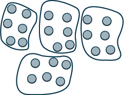
રાખોડી વર્તુળનાં જૂથનું ચિત્ર; દરેક જૂથ અનિયમિત બંધ રેખાથી ઘેરાયેલું છે. તે માહિતીનું જૂથીકરણ કે વિભાજન દર્શાવે છે.
લેખન અભ્યાસ
રોજિંદા જીવનમાં ગણિત
સ્વમૂલ્યાંકન
| હું આ કરી શકું છું… | વિશ્વાસપૂર્વક | થોડી મદદથી | ના—મને સમજાતું નથી! |
|---|---|---|---|
| ભાગાકારની લખાવટનો ઉપયોગ કરવો. | |||
| પૂર્ણ સંખ્યાઓનો ભાગાકાર નમૂના દ્વારા દર્શાવવો. | |||
| પૂર્ણ સંખ્યાઓનો ભાગાકાર કરવો. | |||
| શબ્દોમાં આપેલી વાતને બીજગણિતની પદાવલીઓમાં ફેરવવી. | |||
| વ્યવહારુ પ્રશ્નોમાં પૂર્ણ સંખ્યાઓનો ભાગાકાર કરવો. |
ભાગાકાર અને બીજગણિતીય પદાવલીઓ માટે સ્વમૂલ્યાંકનની યાદી. વિદ્યાર્થીઓ પોતાની સમજ વિશે દર્શાવી શકે છે: આત્મવિશ્વાસ છે, થોડી મદદ જોઈએ કે સમજાતું નથી.
પ્રકરણનો પુનરાવર્તન અભ્યાસ
પૂર્ણ સંખ્યાઓનો પરિચય
- ⓐ 2, 99
- ⓑ 0, 2, 99
- ⓐ 4, 90
- ⓑ 0, 4, 90
| સ્થાનકિંમત | અંક | કુલ કિંમત |
|---|---|---|
| સો | 2 | 200 |
| દશક | 5 | 50 |
| એકમ | 8 | 8 |
| 258 |
ચિત્રમાં સોના ખંડનાં જૂથ, 10ના ખંડનાં જૂથ અને એક એક ખંડ છે. નીચેના કોષ્ટકમાં ખંડના પ્રકાર, તેમની કુલ કિંમત અને બધા ખંડની કુલ કિંમત ગોઠવેલી છે.
- ⓐ
- ⓑ
- ⓒ
- ⓓ
- ⓔ
- ⓐ દશક
- ⓑ સો હજાર
- ⓒ એકમ
- ⓓ દસ હજાર
- ⓔ હજાર
- ⓐ
- ⓑ
- ⓒ
- ⓓ
- ⓔ
પૂર્ણ સંખ્યાઓનો સરવાળો કરો
એક દશકની સળી અને ત્રણ એકમના ખંડ છે. કુલ 13 એકમ થાય છે; આ 6 + 7નો નમૂનો છે.
| + | 0 | 1 | 2 | 3 | 4 | 5 | 6 | 7 | 8 | 9 |
|---|---|---|---|---|---|---|---|---|---|---|
| 0 | 0 | 1 | 3 | 4 | 6 | 7 | 9 | |||
| 1 | 1 | 2 | 3 | 4 | 7 | 8 | 9 | |||
| 2 | 3 | 4 | 5 | 6 | 7 | 8 | 10 | 11 | ||
| 3 | 3 | 5 | 7 | 8 | 10 | 12 | ||||
| 4 | 4 | 5 | 8 | 9 | 12 | |||||
| 5 | 5 | 7 | 8 | 11 | 13 | |||||
| 6 | 6 | 7 | 8 | 10 | 13 | 15 | ||||
| 7 | 9 | 12 | 13 | 15 | 16 | |||||
| 8 | 8 | 9 | 11 | 14 | 16 | |||||
| 9 | 9 | 10 | 11 | 13 | 14 | 17 |
11 હરોળ અને 11 સ્તંભનું સરવાળાનું કોષ્ટક. ઉપરની હરોળ અને ડાબા સ્તંભમાં 0થી 9 છે. આપેલા સરવાળા અને ખાલી ખાણાં જુદી સુલભ કોષ્ટક નોંધમાં જાળવ્યાં છે; ખાલી ખાણાં ભરવાનાં છે.
| + | 0 | 1 | 2 | 3 | 4 | 5 | 6 | 7 | 8 | 9 |
|---|---|---|---|---|---|---|---|---|---|---|
| 0 | 0 | 1 | 2 | 3 | 4 | 5 | 6 | 7 | 8 | 9 |
| 1 | 1 | 2 | 3 | 4 | 5 | 6 | 7 | 8 | 9 | 10 |
| 2 | 2 | 3 | 4 | 5 | 6 | 7 | 8 | 9 | 10 | 11 |
| 3 | 3 | 4 | 5 | 6 | 7 | 8 | 9 | 10 | 11 | 12 |
| 4 | 4 | 5 | 6 | 7 | 8 | 9 | 10 | 11 | 12 | 13 |
| 5 | 5 | 6 | 7 | 8 | 9 | 10 | 11 | 12 | 13 | 14 |
| 6 | 6 | 7 | 8 | 9 | 10 | 11 | 12 | 13 | 14 | 15 |
| 7 | 7 | 8 | 9 | 10 | 11 | 12 | 13 | 14 | 15 | 16 |
| 8 | 8 | 9 | 10 | 11 | 12 | 13 | 14 | 15 | 16 | 17 |
| 9 | 9 | 10 | 11 | 12 | 13 | 14 | 15 | 16 | 17 | 18 |
0થી 9 સુધીની સંખ્યાઓના સરવાળા દર્શાવતું સ્પષ્ટ અને સાદું કોષ્ટક. ખાણાંની ગોઠવણીમાં મૂળભૂત અંકગણિત અને સંખ્યાઓના સંબંધો સમજવા માટેનું સાધન.
| + | 3 | 4 | 5 | 6 | 7 | 8 | 9 |
|---|---|---|---|---|---|---|---|
| 6 | |||||||
| 7 | |||||||
| 8 | |||||||
| 9 |
આ કોષ્ટકમાં 5 હરોળ અને 8 સ્તંભ છે. ઉપરની હરોળ શીર્ષકોની છે, જેમાં 3થી 9 સુધીની સંખ્યાઓ દરેક ખાણામાં એક પ્રમાણે છે. ડાબેથી નીચેની હરોળનાં શીર્ષક 6, 7, 8 અને 9 છે. પહેલા ખાણામાં વત્તાની નિશાની છે. બાકીનાં બધાં ખાણાં ખાલી છે.
- ⓐ 19
- ⓑ 19
- ⓐ 13
- ⓑ 13
8 ફૂટ ઊંચાઈ અને 15 ફૂટ પહોળાઈ ધરાવતા લંબચોરસનું ચિત્ર.
કાટકોણ ત્રિકોણનું ચિત્ર; પાયો 12 સેન્ટિમીટર, ઊંચાઈ 5 સેન્ટિમીટર અને ત્રાંસો કર્ણ 13 સેન્ટિમીટર છે.
પૂર્ણ સંખ્યાઓની બાદબાકી કરો
ચિત્રમાં ખંડનો ઉપયોગ કરીને 18 – 4ની બાદબાકી દર્શાવી છે.
પૂર્ણ સંખ્યાઓનો ગુણાકાર કરો
ચિત્રમાં વર્તુળનો ઉપયોગ કરીને 2 × 4નો ગુણાકાર દર્શાવ્યો છે.
| × | 0 | 1 | 2 | 3 | 4 | 5 | 6 | 7 | 8 | 9 |
|---|---|---|---|---|---|---|---|---|---|---|
| 0 | 0 | 0 | 0 | 0 | 0 | 0 | 0 | 0 | ||
| 1 | 0 | 1 | 2 | 4 | 5 | 6 | 7 | 9 | ||
| 2 | 0 | 4 | 8 | 10 | 14 | 16 | ||||
| 3 | 3 | 9 | 18 | 24 | ||||||
| 4 | 0 | 4 | 12 | 24 | 36 | |||||
| 5 | 0 | 5 | 10 | 20 | 30 | 35 | 40 | 45 | ||
| 6 | 12 | 18 | 36 | 42 | 54 | |||||
| 7 | 0 | 7 | 21 | 35 | 56 | 63 | ||||
| 8 | 0 | 8 | 16 | 32 | 48 | 64 | ||||
| 9 | 18 | 27 | 36 | 63 | 72 |
11 હરોળ અને 11 સ્તંભનું ગુણાકાર કોષ્ટક. ઉપરની હરોળ અને ડાબા સ્તંભમાં 0થી 9 છે; પહેલા ખાણામાં ગુણાકારની નિશાની છે. કેટલાક ગુણનફળ આપેલા છે અને બાકીનાં ખાણાં ખાલી છે.
| × | 0 | 1 | 2 | 3 | 4 | 5 | 6 | 7 | 8 | 9 |
|---|---|---|---|---|---|---|---|---|---|---|
| 0 | 0 | 0 | 0 | 0 | 0 | 0 | 0 | 0 | 0 | 0 |
| 1 | 0 | 1 | 2 | 3 | 4 | 5 | 6 | 7 | 8 | 9 |
| 2 | 0 | 2 | 4 | 6 | 8 | 10 | 12 | 14 | 16 | 18 |
| 3 | 0 | 3 | 6 | 9 | 12 | 15 | 18 | 21 | 24 | 27 |
| 4 | 0 | 4 | 8 | 12 | 16 | 20 | 24 | 28 | 32 | 36 |
| 5 | 0 | 5 | 10 | 15 | 20 | 25 | 30 | 35 | 40 | 45 |
| 6 | 0 | 6 | 12 | 18 | 24 | 30 | 36 | 42 | 48 | 54 |
| 7 | 0 | 7 | 14 | 21 | 28 | 35 | 42 | 49 | 56 | 63 |
| 8 | 0 | 8 | 16 | 24 | 32 | 40 | 48 | 56 | 64 | 72 |
| 9 | 0 | 9 | 18 | 27 | 36 | 45 | 54 | 63 | 72 | 81 |
0x0થી 9x9 સુધીનું ગુણાકારનું કોષ્ટક. દરેક હરોળ અને સ્તંભ જ્યાં મળે ત્યાં તેમનું ગુણનફળ છે. વાંચવું સરળ બને તે માટે હરોળમાં વારાફરતી આછો અને ઘેરો રાખોડી રંગ છે. મૂળભૂત ગણિત શીખવા માટે યોગ્ય છે.
| × | 3 | 4 | 5 | 6 | 7 | 8 | 9 |
|---|---|---|---|---|---|---|---|
| 6 | |||||||
| 7 | |||||||
| 8 | |||||||
| 9 |
8 સ્તંભ અને 5 હરોળના કોષ્ટકનું ચિત્ર. પહેલી હરોળ અને પહેલા સ્તંભનાં ખાણાં બાકીનાં ખાણાં કરતાં ઘેરા રંગનાં છે. પહેલી હરોળનાં મૂલ્યો “x; 3; 4; 5; 6; 7; 8; 9” છે. પહેલા સ્તંભનાં મૂલ્યો “x; 6; 7; 8; 9” છે. બાકીનાં બધાં ખાણાં ખાલી છે.
- ⓐ 28
- ⓑ 28
પૂર્ણ સંખ્યાઓનો ભાગાકાર કરો
ચિત્રમાં રાખોડી વર્તુળનાં જૂથ દ્વારા 8 ભાગ્યા 2 દર્શાવ્યું છે.
પ્રકરણની અભ્યાસ કસોટી
- ⓐ ગણતરીની સંખ્યાઓ
- ⓑ પૂર્ણ સંખ્યાઓ.
- ⓐ 4, 87
- ⓑ 0, 4, 87
- ⓐ
- ⓑ
- ⓒ
- ⓓ
- ⓐ છસો તેર
- ⓑ પંચાવન હજાર બસો આઠ
- ⓐ 613
- ⓑ 55,208